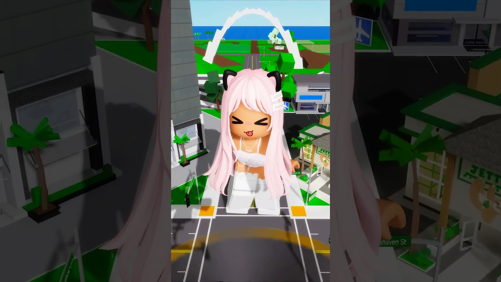
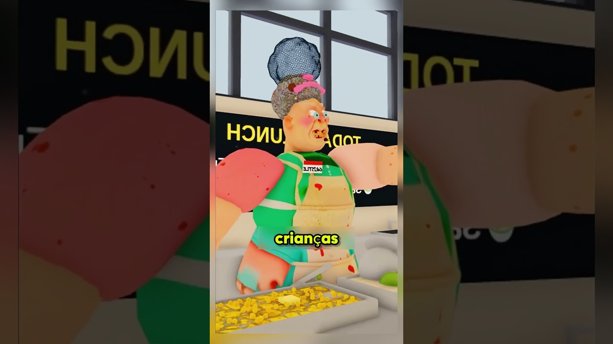
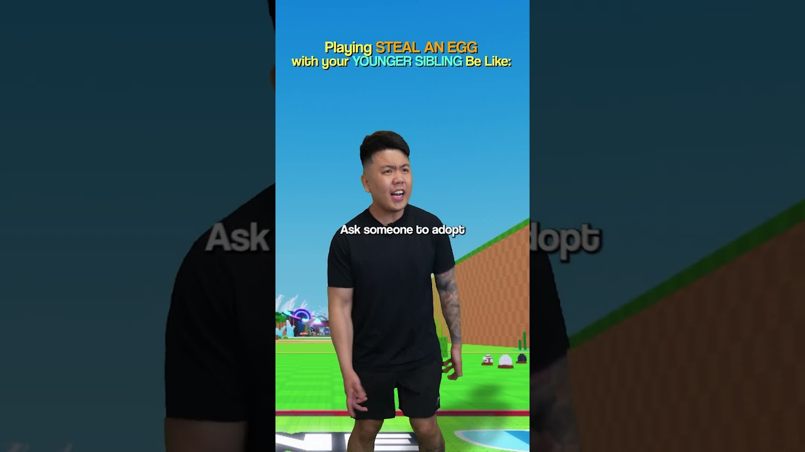
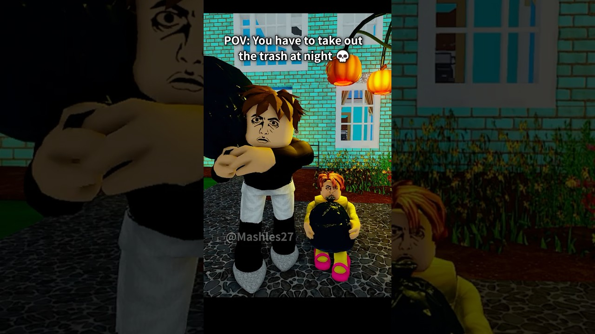
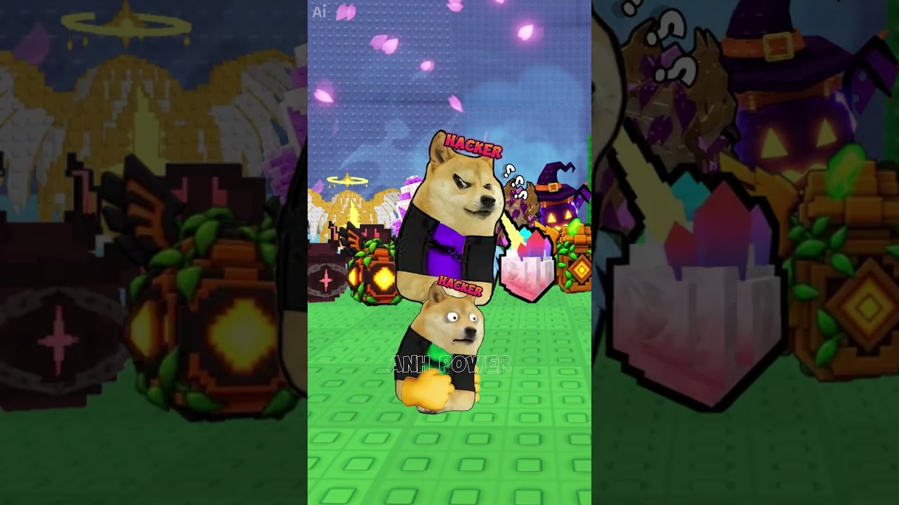
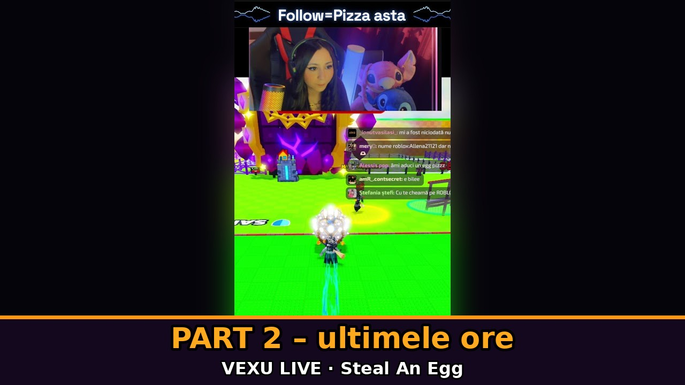
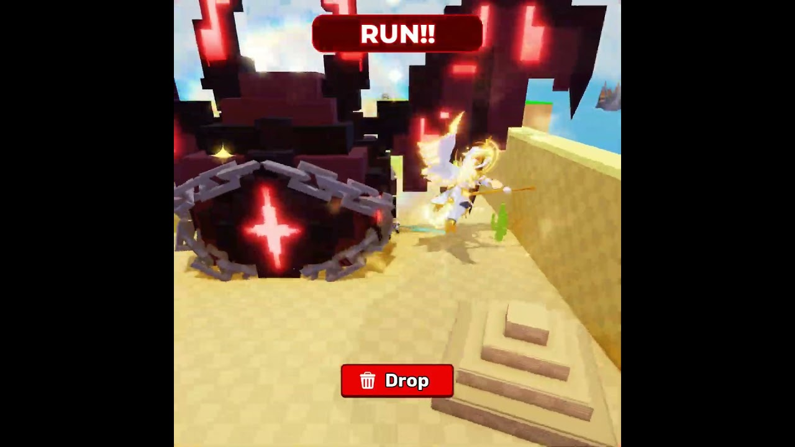
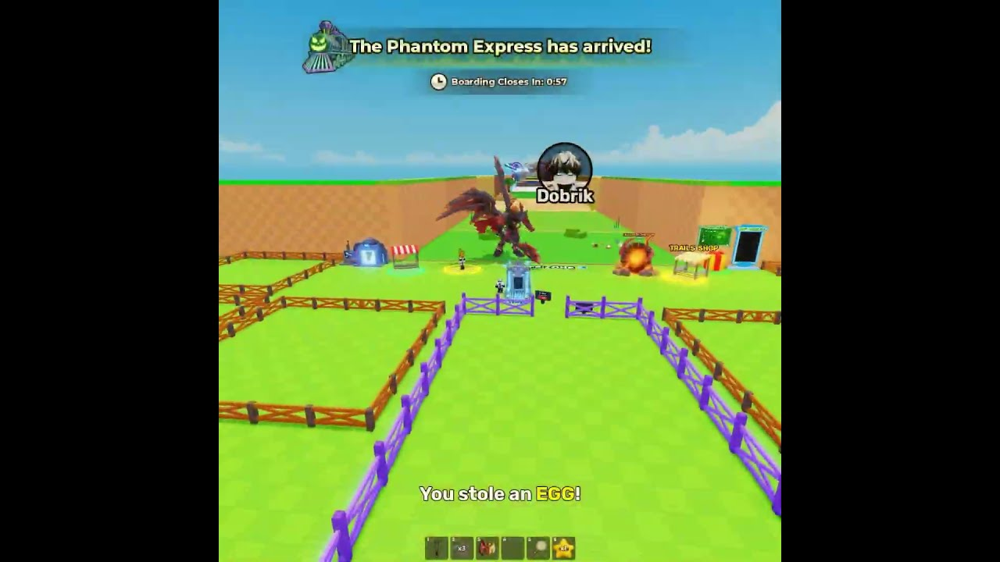

JocSteal An Egg
92 postări · cele mai noi primele · vezi în blog cu filtre

TREND SHORTS29 octombrie 2026Steal An EggPoliția a încercat s-o oprească: un short de 22 de secunde a trecut de 250K în 7 ore
Layla Roblox are un short de 22 de secunde, „The police helicopter tried to stop giant me😅🚁”, urcat pe 25 oct, la 16:00 (ora României). 📊…TREND SHORTS29 octombrie 2026Steal An Egg15 secunde fără nicio voce: „Mom yelling at the family” a trecut de jumătate de milion în 10 ore
Zeflay are un short de 15 secunde, „Mom yelling at the family 😱”, urcat pe 25 oct, la 13:00 (ora României). 📊 Aprox. 537K vizionări…
TREND SHORTS28 octombrie 2026Steal An Egg„A Cozinheira Imortal”: povestea Roblox narată, cu subtitrări de un cuvânt, ~2,78M vizualizări
O poveste narată în portugheză, cu subtitrări de un singur cuvânt (în cover: „crianças”, adică „copii”), în galben, pe imagini animate…
TREND SHORTS28 octombrie 2026Steal An Egg„Playing Steal an Egg With Younger SIBLINGS Be Like..”: skit „X be like” de 65 de secunde, ~1,87M vizualizări
Un skit „Playing Steal An Egg with your younger sibling be like:”: un om real, în fața unui fundal din joc, cu titlul mare sus și…TREND SHORTS28 octombrie 2026Steal An Egg„Sunt cel mai lent om”: povestea playit care a trecut de 5,9 milioane în două zile
playit are un short Roblox, „Im The Slowest PERSON...”, de 144 de secunde, urcat pe 23 oct pe la 21:00 (ora României). 📊 Aprox. 5,96…
TREND SHORTS28 octombrie 2026Steal An EggNu-i nevoie de 12 ore de editare: un POV de 32 de secunde a ajuns la 5,3 milioane
Mashles are un short de 32 de secunde, „When you need to take out the trash at night 😭”, urcat pe 23 oct pe la 02:00 (ora României). 📊… TREND SHORTS28 octombrie 2026Steal An Egg
TREND SHORTS28 octombrie 2026Steal An EggCrispyClips: „1 DIN 5 E SECRET”, un format de testat cu 5 ouă
CrispyClips are un short din Steal An Egg, „I bought 5 Halloween eggs”, de 33 de secunde, urcat pe 18 oct pe la 23:13 (ora României). 📊… TREND SHORTS28 octombrie 2026Steal An Egg
TREND SHORTS28 octombrie 2026Steal An EggNoob Bacon Real dă Candy Corn pe ouă: ~956K vizionări în Steal An Egg
Noob Bacon Real are un short din Steal An Egg, „I Traded Candy Corn for Eggs in Steal An Egg”, de 47 de secunde, urcat pe 18 oct pe la… TREND SHORTS28 octombrie 2026Steal An Egg
TREND SHORTS28 octombrie 2026Steal An Egggreendano: „The WORST Player in Steal an Egg”, gluma cu coechipierul care înțelege greșit
greendano are un short din Steal an Egg, „The WORST Player in Steal an Egg 😭”, de 33 de secunde, urcat pe 21 oct pe la 11:00 (ora… TREND SHORTS28 octombrie 2026Steal An Egg
TREND SHORTS28 octombrie 2026Steal An EggJOYBLOX: „Fantoma mi-a dat oul jos… FUGI!”, formula cu urmărire în Steal an Egg
JOYBLOX are un short din Steal an Egg, „I Got the RAREST Halloween Pet in Steal an Egg!”, de 49 de secunde, urcat pe 21 oct pe la 12:00…
TREND SHORTS27 octombrie 2026Steal An Egg„When hacker meet admin in steal an egg”: meme-ul cu doge de 9 secunde, ~0,87M vizualizări
Un meme scurt cu doi câini „doge”, ambii cu eticheta HACKER, unul peste altul, pe fundalul din Steal An Egg (ouă, cristale, dovleci de…VEXU LIVE27 octombrie 2026Steal An EggMerită să cumperi ouăle de Halloween pe Steal An Egg?
🎃 DA sau NU? Short-ul „Merita sa cumperi ouale de Halloween pe Steal an egg?” de pe canalul VEXU Online pune chiar întrebarea asta.…
VEXU LIVE27 octombrie 2026Steal An EggLive pe Steal an egg – duminica în care s-a închis PART 2
🥚 Live-ul „Live pe Steal an egg” de pe canalul VEXU Online, în înregistrare: https://www.youtube.com/watch?v=2-zyRvvx14g 📺 Cifrele (citite…VEXU LIVE26 octombrie 2026Steal An EggBombardier pe Steal An Egg: 9.766 vizualizări
Short-ul VEXU Online „Bombardier pe Roblox Steal an egg 🔥” a ajuns la 9.766 vizualizări (citit de Terra pe 22 oct). 📊 Azi, luni 26 oct, la…
TREND SHORTS26 octombrie 2026Steal An Egg„Trucul care încă merge”: formula de urgență de la Dobri_game, fără exploit
Dobri_game are un short cu titlul „încă merge”, care a prins foarte repede. Ne interesează doar formatul, nu bug-ul. Copiem formula, nu…
TREND SHORTS26 octombrie 2026Steal An Egg„Toți s-au urcat în tren… eu nu”: strategia cu Phantom Express de la Dobri_game
Dobri_game are un short în care, cât toată lumea urcă în Phantom Express, el rămâne pe loc și profită. Îl prezentăm ca strategie. Copiem…